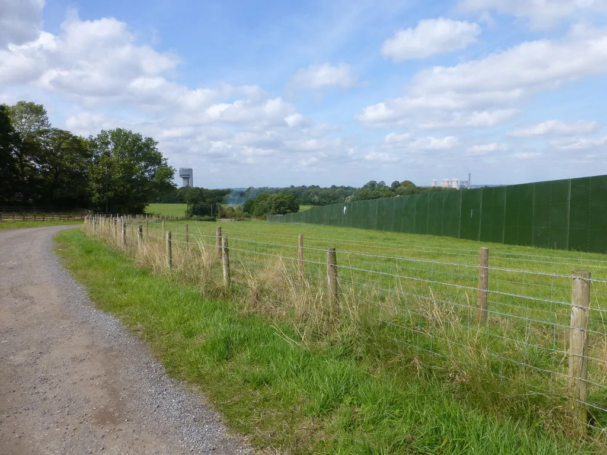
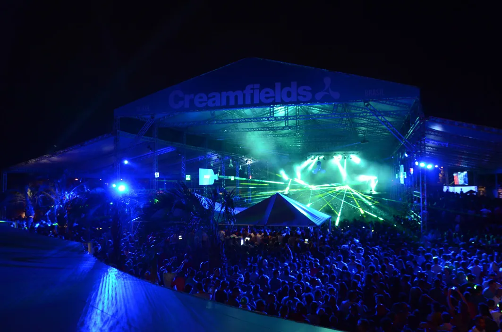
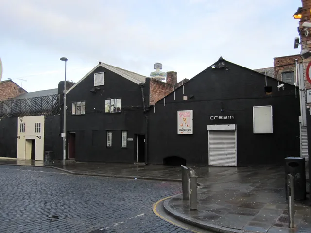
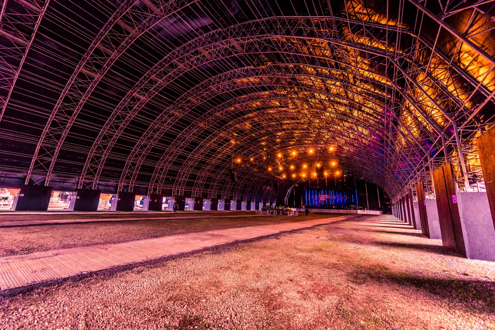

Creamfields
Creamfields Festival
A Liverpool club night's day out that became four days in a Cheshire field every August bank holiday. Where it happens, how big it is, who owns it, and what plays beyond the Arc Stage.
A club night that became a festival.
Creamfields started as a club's day out. In 1998 Cream, a house night in Liverpool, took 25,000 people to a field near Winchester for one day. It now fills the Daresbury estate for four days every August bank holiday, and its name has been on festivals from Buenos Aires to Hong Kong.
What is Creamfields to someone who has never been? This guide covers where Creamfields happens and when, how big it is, how it grew and who owns it now, and why it became famous. Then it answers the question this site is here for: under the headliners on the Arc Stage, what does Creamfields actually play?
Where Creamfields happens.
Where is Creamfields? Since 2006 the Creamfields location has been the Daresbury estate in Cheshire. By the festival's own figures the site is 19.6 miles by road from Liverpool and 26 miles from Manchester. Daresbury is a village in the Borough of Halton with a Warrington postal address, which is why the festival also turns up as Creamfields Warrington.
When is Creamfields? Always the August bank holiday weekend. It has run for four days since 2016, Thursday to Sunday, and in 2026 that was 27 to 30 August. The festival asks drivers to follow its own signs rather than a sat-nav, because roads around the site close for the weekend.

It has not always been here. The first Creamfields, in 1998, was in Winchester, in Hampshire. From 1999 to 2005 it was held on the old Liverpool airport at Speke, closer to its parent club, on a site that held 50,000 people. It moved out of the city to Daresbury in 2006 and has stayed.
Creamfields South
For two summers there were two. Creamfields South was launched in 2022, the festival's 25th anniversary, at Hylands Park in Chelmsford over the Platinum Jubilee weekend in June, with David Guetta and Calvin Harris among its headliners, and the Daresbury event was renamed Creamfields North. Creamfields South came back in 2023. That September Live Nation announced it would not return, and from 2024 there has been one Creamfields in England again, at Daresbury.
Creamfields around the world
Outside Creamfields UK, the name has been used for editions in more than twenty countries. Buenos Aires held one from 2001 to 2015 and again from 2024, Chile from 2004 to 2018 and again from 2022, and Hong Kong and Taiwan since 2017. There have also been editions in Australia, Brazil, Ireland, Poland, Russia and Thailand, among others.

The editions abroad are separate events with their own dates and bills. The rest of this guide is about the original, in Cheshire.
Creamfields 2027
Creamfields 2027 is on Thursday 26 to Sunday 29 August 2027 at Daresbury, the August bank holiday weekend as usual. The festival is billing it as 30 years of Creamfields.
How big Creamfields is.
The current Creamfields capacity is 80,000 people. Cheshire Constabulary reported that the 2026 edition attracted a capacity crowd of 80,000, with around 55,000 camping on site across the four-day festival.
Historical Creamfields attendance figures are not measured consistently. Published multi-day totals often sum admissions across the festival days, while the 2026 police figure describes people at the event. Read the table as a record of the figures published at the time, not as a direct year-by-year comparison. The growth still came in visible steps as days were added to the weekend.
| Year | Where | Days | Published attendance |
|---|---|---|---|
| 1998 | Winchester | 1 | 25,000 |
| 1999 to 2005 | Old Liverpool airport, Speke | 1 | 50,000 |
| 2006 and 2007 | Daresbury | 1 | 50,000 |
| 2008 | Daresbury | 2 | 50,000 |
| 2009 | Daresbury | 2 | 60,000, first sell-out |
| 2010 | Daresbury | 2 | 80,000 |
| 2011 | Daresbury | 2 | 100,000 |
| 2012 | Daresbury | 3 | 100,000, last day flooded out |
| 2013 to 2015 | Daresbury | 3 | 150,000 |
| 2016 | Daresbury | 4 | 200,000 |
| 2017 to 2019 | Daresbury | 4 | 280,000 |
| 2020 | none | 0 | Cancelled for the pandemic |
| 2026 | Daresbury | 4 | 80,000 people; around 55,000 camping |
The first sell-out came in 2009, at 60,000 over two days. The festival went to three days in 2012 and to four in 2016, and a site expansion in 2017 took the weekend total to its peak.
The audience at home is bigger again. In 2015 Creamfields was streamed live for the first time, to 500,000 people online.
A short history, and who owns Creamfields.
Creamfields grew out of Cream, a weekly house night at Nation, a club in Wolstenholme Square in Liverpool that had once been Snobs Disco. The night ran from October 1992 to June 2002, promoted by Darren Hughes, James Barton and Andy Carroll.

The first Creamfields was a one-day event on 2 May 1998 in Winchester, with Sasha, Paul van Dyk, Daft Punk and Tony De Vit at the top of the bill. The next year it came home to Liverpool, and in 2006 it moved to Daresbury. For its tenth anniversary, in 2008, it became a two-day event.
Who owns Creamfields? The festival is operated by Cream Global Ltd under Live Nation control. Live Nation acquired a 90% interest in Cream Holdings in May 2012; the company was renamed Cream Global in 2020. The same year as the acquisition brought the festival's worst weekend. On Sunday 26 August 2012, the third and final day, the organisers cancelled everything after overnight rain flooded the site, with Calvin Harris, deadmau5, Axwell, Sub Focus and Tiësto still to play. The next year £500,000 went into protecting the site against bad weather, and in 2019 another £2 million into safety, security and the site's environmental impact.
Cream's own home did not last. The Nation building was demolished in 2016, and the brand carried on running the festival without it. The 2020 edition was cancelled for the pandemic and replaced by a virtual festival; 2021 went ahead, and sold out in record time.
In 2026, the 20th year at Daresbury, thunderstorms under a yellow weather warning stopped the music across the site on the Friday night. The festival carried on through the weekend and attracted a capacity crowd of 80,000 people.
Why Creamfields is famous.
Creamfields is famous first for its stages. The Arc Stage is the one people know. In 2019 Swedish House Mafia had it to themselves for the day, at their first UK show since 2012.
The Steel Yard came in 2016: a 15,000-capacity steel structure built by Acorn Events, big enough that it became a small festival of its own, with Creamfields Steel Yard events in Liverpool and London. Beside them are APEX, a 30,000-capacity indoor arena, and, since 2025, HALO, a circular arena 45 metres across with lighting, visuals and sound all the way round.

The second is its record. Creamfields was named Best Dance Festival at the UK Festival Awards several times between 2004 and 2015, and Best Major Festival in 2016. The DJ Awards gave it Best International Dance Music Festival in 2014, and DJ Mag placed it 13th in its list of the world's best festivals in 2019.
The third is that it has lasted. The first edition was in 1998, and the original festival has occupied the August bank holiday since 1999, apart from the cancelled 2020 edition.
The music
What the music actually is.
Creamfields was a house night's festival first. Cream was a house club, and the 1998 bill put Sasha, Paul van Dyk and Daft Punk in one field. From there the bill followed big-room dance music wherever it went: Tiësto and Paul van Dyk from the late 2000s, then Avicii, David Guetta and Swedish House Mafia, and now Calvin Harris and Martin Garrix at the top.
Trance has never left. Paul van Dyk, on the first bill in 1998, headlined in most years from 2008 to 2014, and Armin van Buuren, Above & Beyond and Aly & Fila followed him. For 2026 the festival billed Tiësto with a new sound inspired by his trance roots, and Ferry Corsten was on the line-up.
Techno has its own arenas. Carl Cox has headlined again and again since 2007, and in 2026 he was booked to take over HALO on the Friday. Adam Beyer, Nina Kraviz and Charlotte de Witte have all been on the bill, and Amelie Lens brought her AURA show to Creamfields in 2026 as a UK festival exclusive. It reaches further out, too: in 2025 the Misfit stage had the hardstyle DJ Maddix, and Fatboy Slim had a stage of his own on the last day.
Creamfields has booked drum and bass for longer than its posters suggest. Sub Focus was due on the flooded Sunday in 2012. Chase & Status were among the 2016 headliners, and Pendulum were on the 2020 bill before the pandemic cancelled it. In 2025 Chase & Status, who started out in jungle before moving to drum and bass, headlined the Arc Stage on the Friday for the first time, with Sub Focus and Andy C, the founder of RAM Records, also on the bill. The 2026 line-up had Andy C again, with Shy FX, Hybrid Minds and Hedex.
The festival's own film from its 2019 After Series is two minutes of that crowd, the bass and drum and bass tent at full stretch.
Hearing Creamfields from home.
Creamfields films its stages. Beatport has streamed and filmed sets there: of the DJ sets behind the Selector, 52 are from Creamfields, 51 of them Beatport's, from Carl Cox and Adam Beyer to CamelPhat and Eric Prydz.
The festival also puts sets on its own channel, and some artists post their own. The two below are Ewan McVicar on the Steel Yard in 2023, the most watched of his Creamfields sets, on his own channel; and Pete Tong in 2025, on the festival's, who was on the first Creamfields bill in 1998.
Creamfields and Tomorrowland once shared a Steel Yard, for a one-off Garden of Madness event in Liverpool in 2018; for the Belgian festival, read our guide to Tomorrowland. And the Selector plays a DJ set at random from 62,824, if you would rather not choose. Comparing it with other festivals? See the best electronic music festivals in Europe.
Creamfields FAQ.
Where is Creamfields festival located?
On the Daresbury estate in Cheshire, between Liverpool and Manchester. Daresbury is in the Borough of Halton and has a Warrington postal address.
Is Creamfields closer to Liverpool or Manchester?
Liverpool. By the festival's own figures the site is 19.6 miles from Liverpool by road, about 31 minutes, and 26 miles from Manchester, about 39 minutes.
Where did Creamfields used to be?
The first edition, in 1998, was in Winchester. From 1999 to 2005 it was held on the old Liverpool airport at Speke. It has been at Daresbury since 2006. Creamfields South ran at Hylands Park in Chelmsford in 2022 and 2023.
How old do you have to be to go to Creamfields?
18. Creamfields is strictly for over-18s and runs a Challenge 21 policy, with ID checks at the entrances, at the bars and around the site. Accepted ID includes an in-date photocard driving licence, a valid passport and a PASS card.
How much are Creamfields tickets?
Prices vary by day and ticket level. The official Creamfields ticket page lists the current prices and booking fees.
What is Creamfields known for?
Its stages, above all the Arc Stage and the Steel Yard; a long run of UK Festival Awards for Best Dance Festival; and a bill that has spanned EDM, trance, techno and drum and bass since a Liverpool house night started it in 1998.
Sources.
- Wikipedia: Creamfields
- Wikipedia: Cream (nightclub)
- Wikipedia: Daresbury
- Creamfields: The History of Creamfields UK
- Creamfields: Creamfields 2025, A New Era of the Fields
- Creamfields: Where is the festival?
- Creamfields: How do I travel to the festival by car?
- Creamfields: What age do you need to be to attend?
- Creamfields: Welcome to Creamfields 2027
- Creamfields: Current tickets and prices
- Cheshire Constabulary: Creamfields 2026 attendance and camping
- Live Nation Entertainment: 2012 Form 10-K
- Companies House: Cream Global Ltd control
- Companies House: Ticketmaster Europe Holdco control
- NME: Creamfields ends early following heavy flooding
- Mirror via AOL: Creamfields 2026 chaos as stages shut down due to Bank Holiday storms
- Electronic Groove: Creamfields marks 20 years at Daresbury with 2026 line-up
- Skiddle: All you need to know about Creamfields 2026
- Ticketmaster Discover: Creamfields 2025, line-up deep dive
- Ticketmaster Discover: Creamfields delivers two new stages and an all-star line-up for 2025
- Skiddle: The Best DJ Sets of All Time
Continue reading
Read next.
 Digging~14 min read
Digging~14 min readBest Boiler Room Sets of All Time, Ranked and Measured
Eighteen sets picked for what happens in them, beside the ten most-watched, counted across 8,206 Boiler Room recordings.
Read article →Best Clubs in Bristol: Motion, Lakota and Thekla
Motion lost its lease in 2025 and moved, Lakota has run drum and bass since the 1990s, and a 1959 cargo ship still hosts club nights: the best clubs in Bristol.
Read article → Digging~12 min read
Digging~12 min readWhere to Watch Live DJ Sets: Boiler Room, HÖR, NTS and More
Where to watch DJ sets online, how the main platforms differ, and a route through 62,824 archived recordings.
Read article → Festivals~9 min read
Festivals~9 min readTomorrowland Festival: Where It Is, How Big, and the Music
A park in Boom, Belgium, that most of the world knows through a livestream: where Tomorrowland happens, how big it is, who owns it, and what plays off the Mainstage.
Read article →